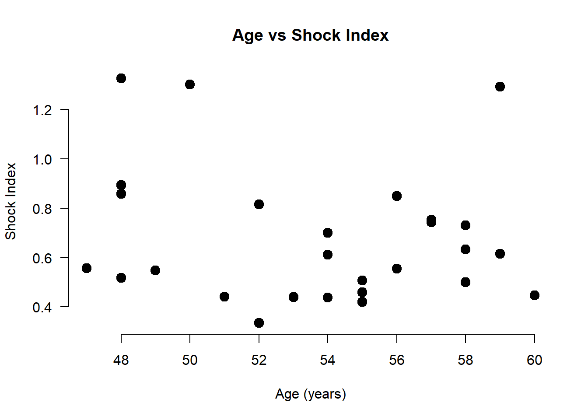
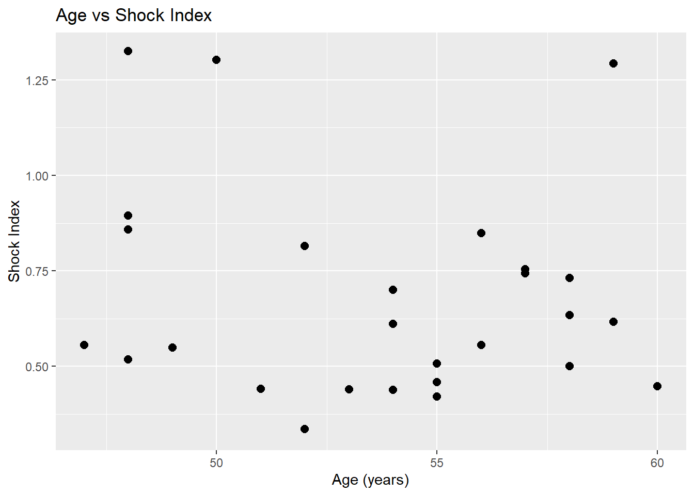

# Import tidyverse
library(tidyverse)2 Data processing, transformation and ploting in R
We will use the tidyverse package, a comprehensive suite of R packages designed for data manipulation, transformation, and visualization tasks, all of which work together in harmony.
2.1 Import dataset
If the dataset is saved in the subfolder named “data” of our RStudio project, we can read it with the read_excel() function from readxl package as follows:
library(readxl)
dat <- read_excel("data/shock_index.xlsx")
dat# A tibble: 30 × 4
sex Age SBP HR
<chr> <dbl> <dbl> <dbl>
1 M 54 139 85
2 F 47 151 84
3 F 58 200 100
4 M NA 170 56
5 F 60 123 55
6 F 57 121 90
7 M 54 120 84
8 M NA 100 92
9 F 53 164 72
10 M 58 161 102
# ℹ 20 more rowsChoosing informative column names can significantly enhance the clarity and interpretability of our dataset. For instance, renaming HR to Heart.Rate offers a more intuitive and informative label for the heart rate variable.
# rename HR to Heart.Rate
dat <- rename(dat, Heart.Rate = HR)
dat# A tibble: 30 × 4
sex Age SBP Heart.Rate
<chr> <dbl> <dbl> <dbl>
1 M 54 139 85
2 F 47 151 84
3 F 58 200 100
4 M NA 170 56
5 F 60 123 55
6 F 57 121 90
7 M 54 120 84
8 M NA 100 92
9 F 53 164 72
10 M 58 161 102
# ℹ 20 more rowsIt’s crucial to ensure that the column names are consistent with the naming conventions in R. This can be achieved by using the clean_names() function from the janitor package, which standardizes column names by converting them to lowercase, removing special characters, and replacing spaces with underscores.
# load the janitor package
library(janitor)
# clean names
dat <- clean_names(dat)
dat# A tibble: 30 × 4
sex age sbp heart_rate
<chr> <dbl> <dbl> <dbl>
1 M 54 139 85
2 F 47 151 84
3 F 58 200 100
4 M NA 170 56
5 F 60 123 55
6 F 57 121 90
7 M 54 120 84
8 M NA 100 92
9 F 53 164 72
10 M 58 161 102
# ℹ 20 more rows2.2 Converting to the appropriate data type
We might have noticed that the categorical variable sex is coded as F (for females) and M (for males), so it is recognized of character type. We can use the factor() function to encode a variable as a factor:
# convert sex to a factor variable with levels female, male
dat$sex <- factor(dat$sex, levels = c("F", "M"), labels = c("female", "male"))
dat# A tibble: 30 × 4
sex age sbp heart_rate
<fct> <dbl> <dbl> <dbl>
1 male 54 139 85
2 female 47 151 84
3 female 58 200 100
4 male NA 170 56
5 female 60 123 55
6 female 57 121 90
7 male 54 120 84
8 male NA 100 92
9 female 53 164 72
10 male 58 161 102
# ℹ 20 more rows2.3 Transforming data
2.3.1 Subsetting observations (rows)
Subsetting observations (rows) is a common data manipulation task in data analysis, allowing us to focus on specific subsets of data that meet particular criteria. This process involves selecting rows from a dataset based on conditions we specify.
- Basic way
Just as we use square brackets [row, column] to select elements from matrices, we apply the same approach to select elements from a data frame. By applying logical conditions, such as greater than (>), less than (<), equal to (==), or combinations of these, we can filter observations that meet specific criteria. For example, we can filter the data to find patients whose age is greater than 55, as follows:
# select rows where age > 55
dat1 <- dat[dat$age > 55, ]
dat1# A tibble: 13 × 4
sex age sbp heart_rate
<fct> <dbl> <dbl> <dbl>
1 female 58 200 100
2 <NA> NA NA NA
3 female 60 123 55
4 female 57 121 90
5 <NA> NA NA NA
6 male 58 161 102
7 female 57 118 89
8 male 56 126 107
9 male 59 138 85
10 male 56 153 85
11 female 57 121 90
12 male 58 119 87
13 male 59 92 119Similarly, we can use the which() function that returns the indices where the condition age > 55 is TRUE. However, in this case, the missing values are treated as FALSE, resulting in the exclusion of rows where age in the original data is NA.
dat2 <- dat[which(dat$age > 55), ]
dat2# A tibble: 11 × 4
sex age sbp heart_rate
<fct> <dbl> <dbl> <dbl>
1 female 58 200 100
2 female 60 123 55
3 female 57 121 90
4 male 58 161 102
5 female 57 118 89
6 male 56 126 107
7 male 59 138 85
8 male 56 153 85
9 female 57 121 90
10 male 58 119 87
11 male 59 92 119If our objective is to analyze data for female patients aged over 55, we can create a subset by incorporating the logical & operator to combine the conditions for age and sex.
# select rows where age > 55 and sex is female
dat3 <- dat[which(dat$age > 55 & dat$sex == "female"), ]
dat3# A tibble: 5 × 4
sex age sbp heart_rate
<fct> <dbl> <dbl> <dbl>
1 female 58 200 100
2 female 60 123 55
3 female 57 121 90
4 female 57 118 89
5 female 57 121 90- Tidyverse way
The dplyr package also provides the filter() function for selecting observations. Selecting rows where age is greater than 55:
# select rows using filter
dat4 <- filter(dat, age > 55)
dat4# A tibble: 11 × 4
sex age sbp heart_rate
<fct> <dbl> <dbl> <dbl>
1 female 58 200 100
2 female 60 123 55
3 female 57 121 90
4 male 58 161 102
5 female 57 118 89
6 male 56 126 107
7 male 59 138 85
8 male 56 153 85
9 female 57 121 90
10 male 58 119 87
11 male 59 92 119Selecting rows where age is greater than 55 and patient is female:
dat5 <- filter(dat, age > 55, sex == "female")
dat5# A tibble: 5 × 4
sex age sbp heart_rate
<fct> <dbl> <dbl> <dbl>
1 female 58 200 100
2 female 60 123 55
3 female 57 121 90
4 female 57 118 89
5 female 57 121 902.3.2 Subsetting variables (columns)
When working with data frames, selecting specific variables (columns) for analysis is a common task. For instance, suppose we want to select only the age, and heart_rate variables from the data frame.
- Basic way
Subsetting variables can be achieved by indexing the variables’ names within [ ], as follows:
dat6 <- dat[ , c("age" , "heart_rate")]
dat6# A tibble: 30 × 2
age heart_rate
<dbl> <dbl>
1 54 85
2 47 84
3 58 100
4 NA 56
5 60 55
6 57 90
7 54 84
8 NA 92
9 53 72
10 58 102
# ℹ 20 more rowsBy specifying the column indices, such as c(2, 4), within brackets, we can select the data in columns 2, and 4 as follows:
dat7 <- dat[ , c(2, 4)]
dat7# A tibble: 30 × 2
age heart_rate
<dbl> <dbl>
1 54 85
2 47 84
3 58 100
4 NA 56
5 60 55
6 57 90
7 54 84
8 NA 92
9 53 72
10 58 102
# ℹ 20 more rows- Tidyverse way
In select() function we pass the data frame first and then the variables separated by commas. Quotes are optional for column names that don’t contain special characters or spaces.
dat8 <- select(dat, age, heart_rate)
dat8# A tibble: 30 × 2
age heart_rate
<dbl> <dbl>
1 54 85
2 47 84
3 58 100
4 NA 56
5 60 55
6 57 90
7 54 84
8 NA 92
9 53 72
10 58 102
# ℹ 20 more rowsOr we can exclude the variables sex and sbp.
dat9 <- select(dat, -c(sex, sbp))
dat9# A tibble: 30 × 2
age heart_rate
<dbl> <dbl>
1 54 85
2 47 84
3 58 100
4 NA 56
5 60 55
6 57 90
7 54 84
8 NA 92
9 53 72
10 58 102
# ℹ 20 more rows2.3.3 Creating new variables
Data analysis often involves creating new variables within data frames based on existing variables. This data transformation process involves adding new columns to a data frame derived from the values of one or more existing columns.
Suppose we want to compute a new variable representing the ratio of heart rate to systolic blood pressure (HR/sbp), which we will call shock_index. We can achieve this by using the mutate() function from dplyr package, as follows:
dat10 <- mutate(dat, shock_index = heart_rate / sbp)
dat10# A tibble: 30 × 5
sex age sbp heart_rate shock_index
<fct> <dbl> <dbl> <dbl> <dbl>
1 male 54 139 85 0.612
2 female 47 151 84 0.556
3 female 58 200 100 0.5
4 male NA 170 56 0.329
5 female 60 123 55 0.447
6 female 57 121 90 0.744
7 male 54 120 84 0.7
8 male NA 100 92 0.92
9 female 53 164 72 0.439
10 male 58 161 102 0.634
# ℹ 20 more rowsOur next step involves categorizing the newly created shock_index variable based on the defined normal range (0.5 to 0.7 beats/mmHg min). This can be done using the case_when() function from the dplyr package.
# convert shock_index into a categorical variable
# (<0.5 with low, <= 0.7 with normal, > 0.7 high)
dat11 <- mutate(dat10,
shock_index1 = case_when(shock_index < 0.5 ~ "low",
shock_index <= 0.7 ~ "normal",
TRUE ~ "high"))
dat11# A tibble: 30 × 6
sex age sbp heart_rate shock_index shock_index1
<fct> <dbl> <dbl> <dbl> <dbl> <chr>
1 male 54 139 85 0.612 normal
2 female 47 151 84 0.556 normal
3 female 58 200 100 0.5 normal
4 male NA 170 56 0.329 low
5 female 60 123 55 0.447 low
6 female 57 121 90 0.744 high
7 male 54 120 84 0.7 normal
8 male NA 100 92 0.92 high
9 female 53 164 72 0.439 low
10 male 58 161 102 0.634 normal
# ℹ 20 more rowsHowever, it’s important to keep in mind that transforming continuous variables into categories may simplify interpretation, but it often results in information loss.
2.4 Using the native pipe operator in a sequence of commands
Given that each verb in dplyr specializes in a particular task, addressing complex queries often typically involves integrating several verbs, a process simplified by using the native forward pipe operator, |>.
For example, we want to filter the original dataset to include only rows where the shock index category is “low” or “high”, using a sequence of dplyr verbs.
sub_dat <- dat |>
mutate(shock_index = heart_rate / sbp,
shock_index1 = case_when(shock_index < 0.5 ~ "low",
shock_index <= 0.7 ~ "normal",
TRUE ~ "high")) |>
filter(shock_index1 == "low" | shock_index1 == "high")2.5 Plots
- Basic plot
# Basic plot
plot(dat10$age, dat10$shock_index,
pch = 19, # Point shape (19 is a solid circle)
cex = 1.5, # Point size
xlab = "Age (years)", # X-axis label
ylab = "Shock Index", # Y-axis label
main = "Age vs Shock Index", # Optional title
las = 1, # Makes axis numbers horizontal (easier to read)
frame.plot = FALSE) # Removes the top/right border for a cleaner look
- ggplot
We can also use the ggplot() function from the ggplot2 package to create a similar plot. Notably, ggplot2 is one of the core packages included in the tidyverse, so it is loaded into an R session when we run the command library(tidyverse).
ggplot(dat10, aes(x = age, y = shock_index)) +
geom_point(size = 2.5) +
labs(title = "Age vs Shock Index",
x = "Age (years)",
y = "Shock Index"
)Warning: Removed 2 rows containing missing values or values outside the scale range
(`geom_point()`).
aes()stands for aesthetic mappings. It defines how variables from the dataset are mapped to visual properties of the plot, such as x-axis position and y-axis position.geom_point()is a geometry function that draws points on the plot.
2.6 Reshaping data
Reshaping data between “wide” and “long” formats in R is a common task in data transformation. For example, data were collected from four individuals, with total cholesterol (TCH) levels measured at baseline (week 0), as well as at 6 and 12 weeks following a 12-week dietary intervention. The data are stored in an Excel spreadsheet with the following structure:
dat_TCH <- read_excel("data/cholesterol.xlsx")
dat_TCH# A tibble: 4 × 3
week0 week6 week12
<dbl> <dbl> <dbl>
1 6.42 5.83 5.75
2 6.76 6.2 6.13
3 6.56 5.83 5.71
4 4.8 4.27 4.15We observe that the dataset is organized in what is commonly referred to as a “wide” format. This structure is particularly well-suited for a repeated measures design, also known as a longitudinal or within-subject design. In such designs, the same individuals are measured multiple times over a period, with each measurement representing a different time point.
First, we add a column to the dataset that assigns a unique identifier to each row using the rowid_to_column() function:
dat_TCH <- dat_TCH |>
rowid_to_column()
dat_TCH# A tibble: 4 × 4
rowid week0 week6 week12
<int> <dbl> <dbl> <dbl>
1 1 6.42 5.83 5.75
2 2 6.76 6.2 6.13
3 3 6.56 5.83 5.71
4 4 4.8 4.27 4.15- From wide to long format
dat_TCH_long <- dat_TCH |>
pivot_longer(cols = starts_with("week"),
names_to = "week",
values_to = "total_cholesterol")
dat_TCH_long# A tibble: 12 × 3
rowid week total_cholesterol
<int> <chr> <dbl>
1 1 week0 6.42
2 1 week6 5.83
3 1 week12 5.75
4 2 week0 6.76
5 2 week6 6.2
6 2 week12 6.13
7 3 week0 6.56
8 3 week6 5.83
9 3 week12 5.71
10 4 week0 4.8
11 4 week6 4.27
12 4 week12 4.15- From long to wide format
dat_TCH_wide <- dat_TCH_long |>
pivot_wider(id_cols = rowid,
names_from = week,
values_from = total_cholesterol)
dat_TCH_wide# A tibble: 4 × 4
rowid week0 week6 week12
<int> <dbl> <dbl> <dbl>
1 1 6.42 5.83 5.75
2 2 6.76 6.2 6.13
3 3 6.56 5.83 5.71
4 4 4.8 4.27 4.15